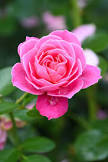

rosa
la rosa rosa: es un símbolo de simpatía, franqueza y amabilidad. Cuanto más intenso el color rosado de la flor, más intenso el sentimiento; mientras las rosas pastel y empolvadas son el símbolo más puro de la dulzura.

roja
La rosa roja hace referencia al amor y el erotismo. Estas suelen ser el obsequio por excelencia de los enamorados. Un rosa o un ramo de rosas rojas simbolizan amor, pasión, atracción y seducción.
amarilla
las rosas amarillas está asociado a la amistad,si quieres obsequiar a tu pareja o a alguien que te gusta con un ramo de rosas, mejor escogerlas rojas que amarillas. Las rosas amarillas también simbolizan la alegría de vivir y la energía.